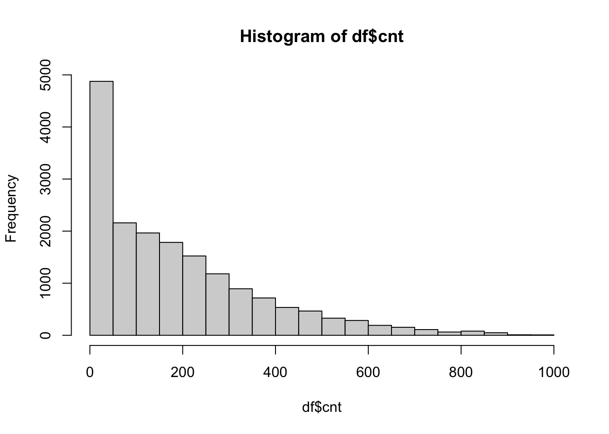
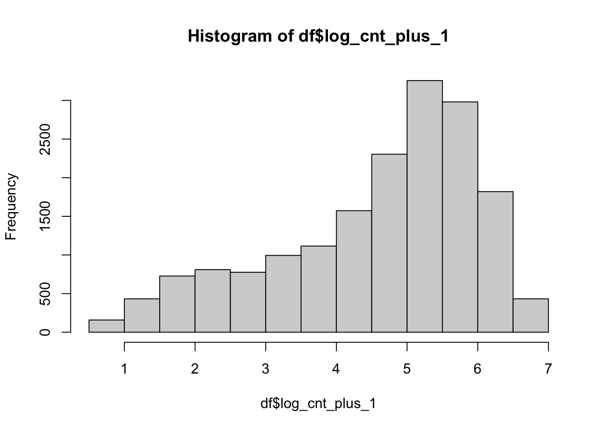

library(tidyverse)
library(tidymodels)
library(vip)
library(skimr)bike_share_model_selection
libraries
data
Data is from Fanaee and Gama (Fanaee-T and Gama 2013)
remote <- 'https://raw.githubusercontent.com/'
account <- 'turalsadigov/MATH_254/main/'
folder <- 'data/Bike-Sharing-Dataset/'
file <- 'hour.csv'
url <- str_c(remote, account, folder, file)
url[1] "https://raw.githubusercontent.com/turalsadigov/MATH_254/main/data/Bike-Sharing-Dataset/hour.csv"bike <- read_csv(url)
bike# A tibble: 17,379 × 17
instant dteday season yr mnth hr holiday weekday working…¹ weath…²
<dbl> <date> <dbl> <dbl> <dbl> <dbl> <dbl> <dbl> <dbl> <dbl>
1 1 2011-01-01 1 0 1 0 0 6 0 1
2 2 2011-01-01 1 0 1 1 0 6 0 1
3 3 2011-01-01 1 0 1 2 0 6 0 1
4 4 2011-01-01 1 0 1 3 0 6 0 1
5 5 2011-01-01 1 0 1 4 0 6 0 1
6 6 2011-01-01 1 0 1 5 0 6 0 2
7 7 2011-01-01 1 0 1 6 0 6 0 1
8 8 2011-01-01 1 0 1 7 0 6 0 1
9 9 2011-01-01 1 0 1 8 0 6 0 1
10 10 2011-01-01 1 0 1 9 0 6 0 1
# … with 17,369 more rows, 7 more variables: temp <dbl>, atemp <dbl>,
# hum <dbl>, windspeed <dbl>, casual <dbl>, registered <dbl>, cnt <dbl>, and
# abbreviated variable names ¹workingday, ²weathersitdata wrangling
df <- bike %>%
select(-dteday, -casual, -registered, -instant, -workingday)
hist(df$cnt)
sum(df$cnt == 1)[1] 158df <- df %>%
mutate(log_cnt_plus_1 = log(cnt + 1),
weathersit_fct = factor(weathersit))
df <-
df %>%
relocate(log_cnt_plus_1, .after = cnt) %>%
relocate(weathersit_fct, .after = weathersit)
df <- df %>%
mutate(across(1:6, as.factor))skim data
df %>%
skimr::skim()| Name | Piped data |
| Number of rows | 17379 |
| Number of columns | 14 |
| _______________________ | |
| Column type frequency: | |
| factor | 7 |
| numeric | 7 |
| ________________________ | |
| Group variables | None |
Variable type: factor
| skim_variable | n_missing | complete_rate | ordered | n_unique | top_counts |
|---|---|---|---|---|---|
| season | 0 | 1 | FALSE | 4 | 3: 4496, 2: 4409, 1: 4242, 4: 4232 |
| yr | 0 | 1 | FALSE | 2 | 1: 8734, 0: 8645 |
| mnth | 0 | 1 | FALSE | 12 | 5: 1488, 7: 1488, 12: 1483, 8: 1475 |
| hr | 0 | 1 | FALSE | 24 | 16: 730, 17: 730, 13: 729, 14: 729 |
| holiday | 0 | 1 | FALSE | 2 | 0: 16879, 1: 500 |
| weekday | 0 | 1 | FALSE | 7 | 6: 2512, 0: 2502, 5: 2487, 1: 2479 |
| weathersit_fct | 0 | 1 | FALSE | 4 | 1: 11413, 2: 4544, 3: 1419, 4: 3 |
Variable type: numeric
| skim_variable | n_missing | complete_rate | mean | sd | p0 | p25 | p50 | p75 | p100 | hist |
|---|---|---|---|---|---|---|---|---|---|---|
| weathersit | 0 | 1 | 1.43 | 0.64 | 1.00 | 1.00 | 1.00 | 2.00 | 4.00 | ▇▃▁▁▁ |
| temp | 0 | 1 | 0.50 | 0.19 | 0.02 | 0.34 | 0.50 | 0.66 | 1.00 | ▂▇▇▇▁ |
| atemp | 0 | 1 | 0.48 | 0.17 | 0.00 | 0.33 | 0.48 | 0.62 | 1.00 | ▁▆▇▆▁ |
| hum | 0 | 1 | 0.63 | 0.19 | 0.00 | 0.48 | 0.63 | 0.78 | 1.00 | ▁▃▇▇▆ |
| windspeed | 0 | 1 | 0.19 | 0.12 | 0.00 | 0.10 | 0.19 | 0.25 | 0.85 | ▇▆▂▁▁ |
| cnt | 0 | 1 | 189.46 | 181.39 | 1.00 | 40.00 | 142.00 | 281.00 | 977.00 | ▇▃▁▁▁ |
| log_cnt_plus_1 | 0 | 1 | 4.57 | 1.42 | 0.69 | 3.71 | 4.96 | 5.64 | 6.89 | ▁▂▃▇▅ |
look at responses
hist(df$log_cnt_plus_1)
References
Fanaee-T, Hadi, and Joao Gama. 2013. “Event Labeling Combining Ensemble Detectors and Background Knowledge.” Progress in Artificial Intelligence 2 (2-3): 113–27. https://doi.org/10.1007/s13748-013-0040-3.